SOMOS CUNINA
Acompañamos a adolescentes en situación de vulnerabilidad
“Nos unimos tras identificar las mismas problemáticas relacionadas a la necesidad actual de crear espacios de acompañamiento para adolescentes que atraviesan situaciones de violencia debido a la desigualdad estructural en la que vivimos”
¿Quiénes somos?
Somos una organización de la sociedad civil compuesta por profesionales de diversas disciplinas -psicología, ciencia política, abogacía, trabajo social, entre otras- que acompaña a adolescentes de barrios populares que sufrieron vulneraciones en el ejercicio de sus derechos en el camino de su restitución, a través de herramientas digitales, dispositivos de atención y actividades en territorio.

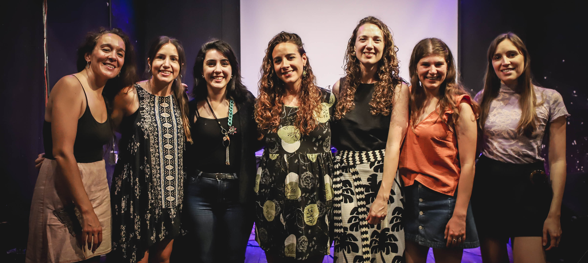

Nuestros objetivos
- Concientizar a adolescentes sobre sus derechos y brindarles información de interés a través de talleres en el barrio y canales digitales.
- Promover espacios que fomenten la palabra y habiliten la contención y la escucha como pilares del acompañamiento con profesionales.
- Problematizar las situaciones de vulnerabilidad y maltrato que atraviesan.
- Asesorar jurídicamente y acompañarlos/as en las diversas instancias estatales que transitan.
¿Qué hacemos?
Construimos espacios de encuentro con adolescentes en contexto de vulnerabilidad, para lograr su desarrollo integral y el pleno acceso y goce de sus derechos.
Trabajamos para incidir en el abordaje de las políticas públicas referidas a las infancias y adolescencias, mediante la articulación con diversos actores sociales, educativos y comunitarios, involucrados en la temática desde hace tiempo.
Aplicación Movil
Desarrollamos una herramienta digital que permite a adolescentes conocer sus derechos de un modo directo y simple, acceder a información sobre becas, talleres y actividades deportivas y culturales, y entrar en contacto con las redes de profesionales que conforman los dispositivos de atención en el barrio.
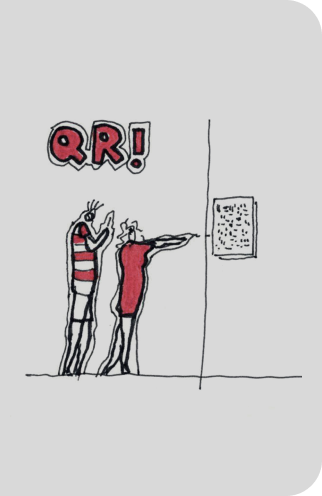
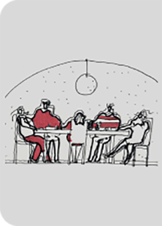
Redes de Profesionales
Armamos redes de profesionales para brindar acompañamiento psicológico y asesoramiento socio-legal a adolescentes del barrio. Ofrecemos espacios de formación teórico-prácticos, abiertos y gratuitos para voluntarios/as de Cunina. Esto nos permite aunar criterios de abordaje y atender los casos transdisciplinariamente.
Talleres
Generamos espacios participativos de contención y reflexión para adolescentes. A través de actividades culturales, deportivas y lúdicas coordinadas por talleristas, apostamos al anclaje en territorio. También brindamos talleres para jóvenes y adultos/as que trabajan en el barrio con adolescentes con el objetivo de acercar nuevas herramientas para sus intervenciones.
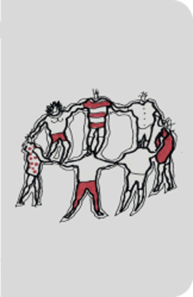
¿Por qué una organización civil?
Creemos en la horizontalidad como forma de trabajo colectivo y encontramos en esta figura un espacio democrático, que permite intercambiar miradas y abordar situaciones complejas de manera integral e interseccional.
Queremos que quienes formen parte de CUNINA tengan un rol activo, aportando desde sus experiencias y recorridos y enriqueciendo las diversas acciones. La realidad que atraviesan adolescentes de barrios populares es compleja. Sabemos que desde este tipo de acompañamientos podemos construir con ellos/as espacios de igualdad, donde prime el compromiso, la corresponsabilidad y la noción de ciudadanía activa.
CONOCENOS
Nuestro equipo
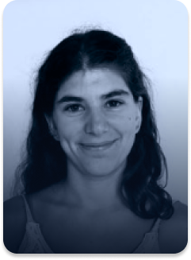
AGUSTINA YOUNG
(politóloga)
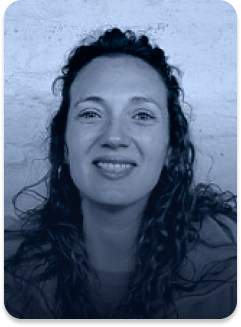
BÁRBARA BELTRÁN
(politóloga)
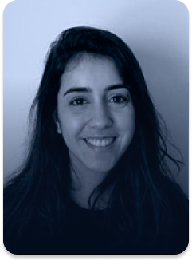
FLORENCIA ÁLVAREZ
(abogada)
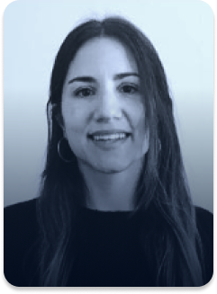
MARÍA EUGENÍA GORLERO
(psicóloga)
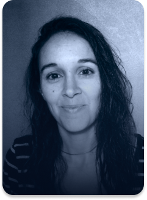
MARÍA MAZZINGH
(politóloga)
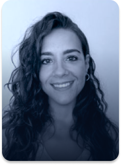
AGUSTINA MARTINEZ
(psicóloga)
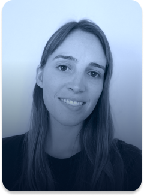
MERCEDES DE CABO
(abogada)
Redes de profesionales
María Julia Arderius
- Trabajadora social
Santiago Mazzinghis
- Abogado
Joaquín Crotto
- Abogado
Alejandro Molina
- Abogado
Juan Pablo Borromeo
- Abogado
Federico Vallero
- Psicólogo
Mariana Politano
- Psicóloga
Florencia Camodeca
- Psicóloga
Belén Picoy
- Psicóloga
Luciana Revelo
- Psicóloga
Sofia Guasco
- Psicóloga
Maximiliano Paz Cerminara
- Contador
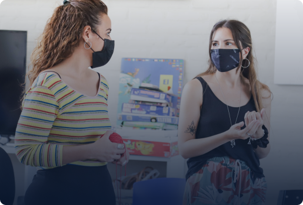
¿Querés ser parte de nuestra asociación?
Si querés integrar alguna de las redes de profesionales, coordinar talleres o colaborar con tareas institucionales, comunicacionales o administrativas, escribinos a asociacioncivilcunina@gmail.com
Contactanos
Seguinos en nuestras redes y enterate de todos nuestros proyectos y actividades.